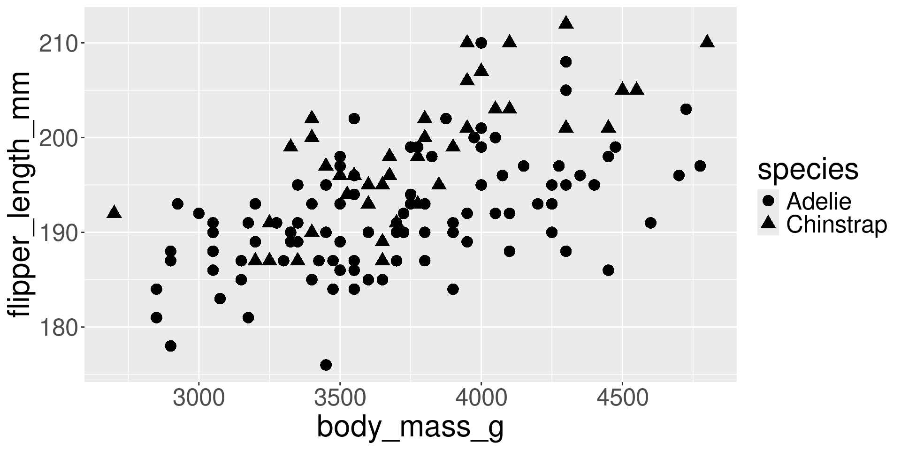
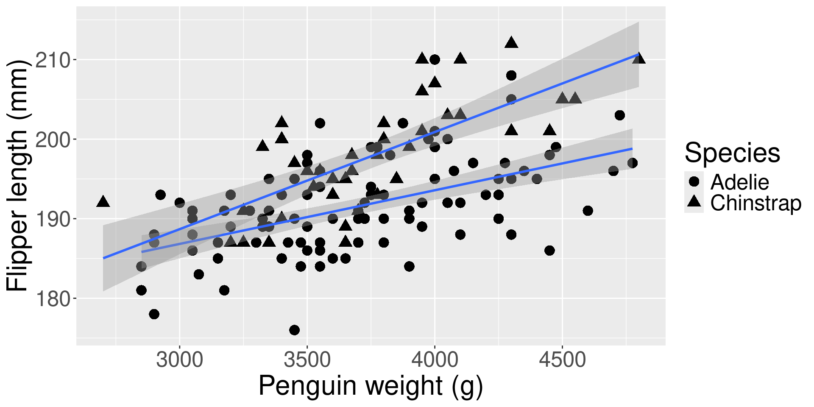
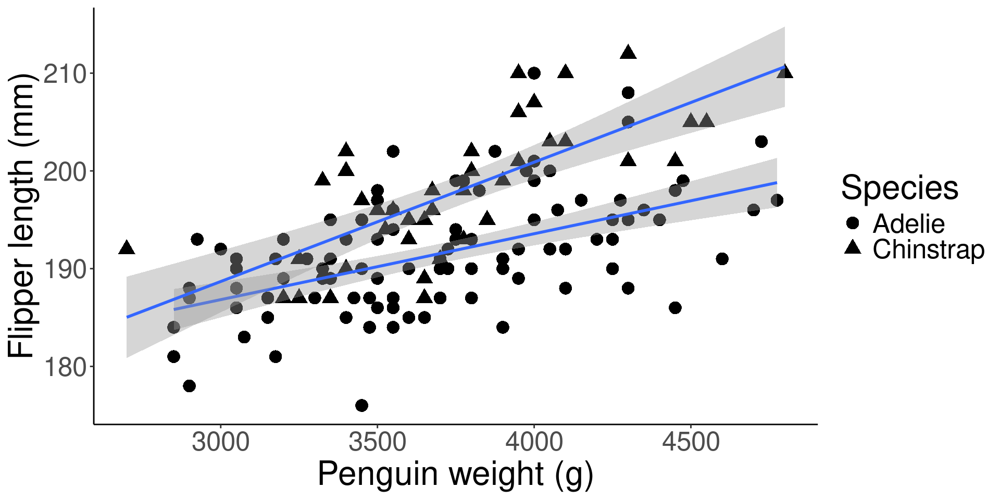
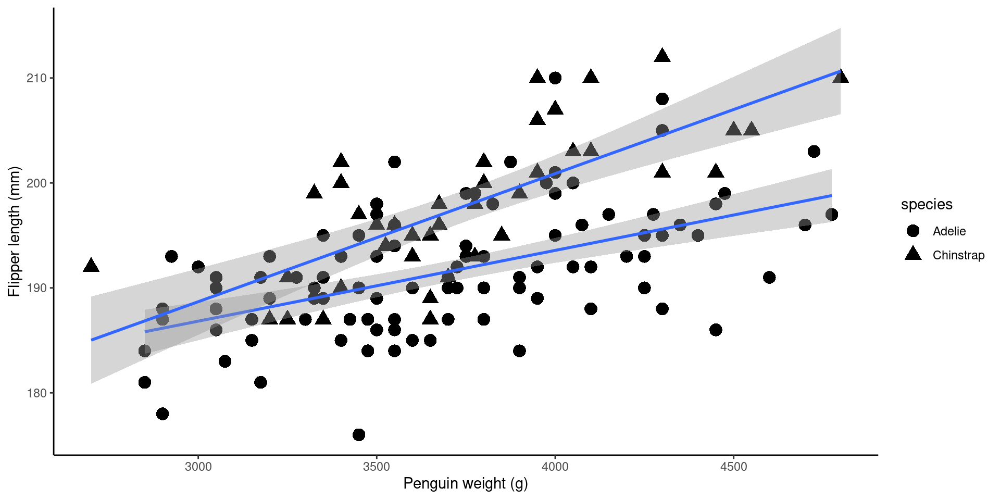
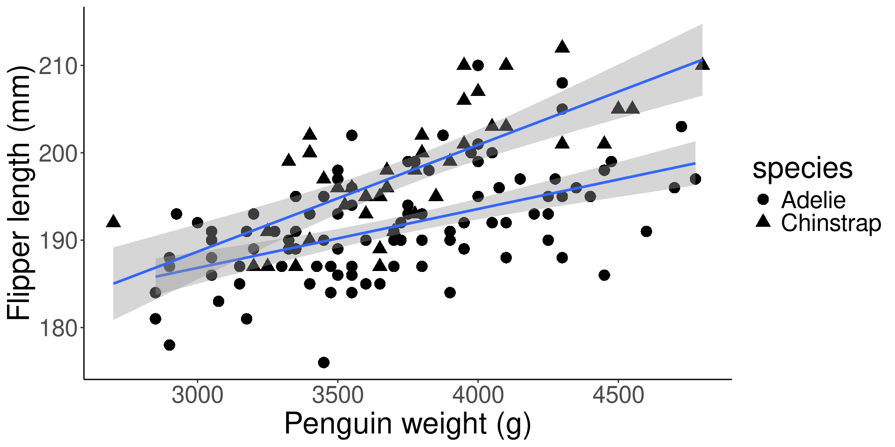
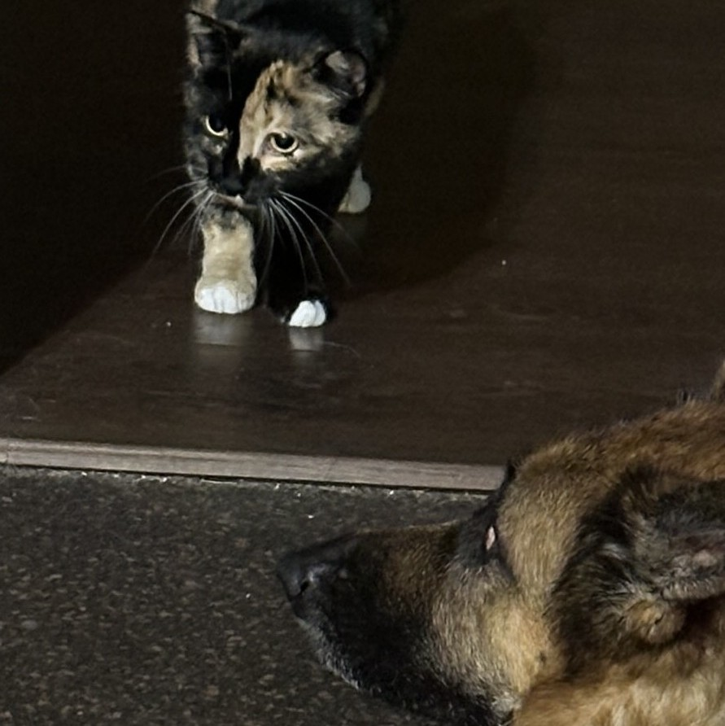

Building community for better data visualization
A people-focused, data-driven program for scholarship and research
Claire M Curry, Ph.D., candidate for Data Visualization Specialist
What is data-driven visualization?
- Definition: “visual representation and presentation of data to facilitate understanding”
- We use visualizations (graphs, figures, plots) for
- exploring
- telling a story
How much work is it to improve a graph?
How many settings to get to publication quality?
One setting

Two settings

Three settings

Four settings

Five settings


Six settings
And we could still do more to improve.

Now, think about what’s happening in health sciences research right now
“How your email finds me”
People don’t pay attention until their point of need
- Pouring energy into workshops and promotion doesn’t work on its own1 because researchers have limited time and attention
- We need workshops, but we need effective workshops with long-term changes in behavior
Data-driven research and librarianship to address
- What our researchers already know
- What gets them to show up
- How to get the learning to stick
What I would bring to this position
- Experience
- Trained as researcher in life sciences (evolutionary biology and ecology)
- Now, seven years of science librarianship
- Tools: R, RShiny, more
- Enthusiasm for learning (example, this presentation is in Quarto)
- Enthusiasm for connecting people, which makes for a successful librarian-researcher1
Goal: Helping people get the skills to make an impact in their chosen field
Philosophy
Key tenets of my approach
- Evidence-based, learner-centered pedagogy
- Human relationships and reciprocity
- Scaling sustainably
Learner centered
- People are tired 1 and have limited cognitive load2
- Universal design helps3 and many things we do are just “tradition” or “inessential weirdnesses”4
- Story-based to capture you with actionable items5
- We need to lower activation barriers lowering6
Human connection and relationships
- Relationships
- Room for vulnerability1 of lived experience 2
- “We are afraid to be approachable at the risk of not being taken seriously”.3
- Clear boundaries (aka the service model) are kind
- Privacy in assessment data - really loved the UNMHS privacy page
- Justice: IRB framework for AI use4
Scaling in a sustainable way
- “Harm reduction”: get biggest, not always easiest, things first1
- Making sure our offerings meet needs2
- Staff burnout and accessibility3
Scholarly Output
Taking these three concepts to my proposed program of scholarship
“Visual [program] complexity is distracting and should therefore never be employed to a degree that exceeds the actual complexity in the data [needs]”1
Getting started with data and community
Workshop development and collaboration
- Scaling up the basics in workshops: the datasets and experimental grounds for upcoming ideas
- Universal design of materials but also on how to implement
- “Accessibility carpentries”: a new program I’ve wanted to do
- Opportunity for collaboration with campus Carpentries and CARC
- Listen to campus about needs and problems!
- Listen again to both people1 and data2
Which is the right cat (workshop)?


Making sure workshops are like visualizations: Possible + useful = relevant1
- There is no right answer, there is the right answer for your situation
- So much already exists, don’t reinvent the wheel2
- Timeline: 2-4 new workshops a semester until rotating through 5-10 rotating
Workshop and asynchronous materials design
- Methods:
- Evidence synthesis: what works in other programs and in health education, education to inform our work (2-5 years in)
- Text and theme analysis of design and wording choices, objectives
- Attendance and satisfaction metrics… easy to get if worded well
- Current work in progress at current institution: LibInsights pathway
- Quantitative analysis: conditional inference trees, non-parametric t-tests, contingency tables
- What’s the metric and why should it not be “efficiency” or quantity/dollars1
- Case studies2 and interviews3
Data visualization wall for cross-pollination
- Three potential interactive paths to use it
- Do you want to do something that’s an example here on your own data?
- Do you want to feature something new?
- Are you looking for collaborators? Facilitating connection (a sort of ideas pollination!)
- Qualitative case study until long-term (numbers of collaborations, grants)
- Timeline: year 1
Potential course: deep dive in health sciences visualizations
- Graduate or upper-level undergraduate: bring your own data
- Literature searching to find field-appropriate data visualization types
- Exploring known human perceptions
- Discipline-specific data visualization in outreach
- Setting up individual workflows for universal design1 in R, Python, Tableau, etc
- Timeline: year 2 or later
Research into improvements
What are the hidden barriers for researchers?

- Marketing, skill retention, approachability of librarians, accessibility
Skill retention in researcher workflows
How much does our training impact people’s actual work products, not just the post-workshop assessment initially?
- Who has had their life changed by an HR workshop? Unlearning series and why that workshop stuck.
Potential focus questions
- what perceived need did this workshop meet? is it what we thought the need was?
- what were barriers to long-term retention or use?
- what worked for long-term implementation? (How many people get grants because of our services? Win awards?))
Methods: IRB, quantitative skills, timing (immediate, one month, six month, one year), likert analysis, interviews1 Ithaka project2, maps project (in progress)
Funding/logistics
- Survey cash for incentives
- Adding on assessment to others’ grants to get funding like CAREER grant (research and outreach, has to has an impact on teaching)
Timeline: first 2-3 years
Marketing vs anthropology of workshop descriptions
- What is enough to bring people in?
- Focused questions
- What tweaks to language work?1
- Do we need to know why? Who on campus could work with?2
- Funding/logistics:
- Health money for workshops?
- Timeline: first 2-3 years
Interventions in approachability
- What helps/impedes people from coming back to us for more help?
- What interventions get people to follow up?
- The experiments with writing prompts in classes. do folks in those workshops come back for more help?
- Social annotation as an intervention, maybe shorten doc ??? The syllabus annotation trend.
- Analysis of “does the asking questions doc” help.
- How, and should, we quantify relationships? What gets people to listen to us if they don’t know they need something. (if they already know us, are they more likely to come to a thing they’re not sure about1)
- What interventions get people to follow up?
- Funding: collaborator with medical folks on what gets people to ask questions of health care professionals
- Timeline: 2-4 years
Universal design in the library
- Unmet needs of disabled students, faculty, staff mostly research on students1, what about others.2
- Experience:
- Sensory libguide and working with GA
- Methods:
- qualitative interviews and survey free-response
- quantitative survey responses
- Potential issues: history of not being listened to3, why respond to yet another survey ($ for survey, ??)
- Potential collaborators:
- Health outreach grants
- Campus disability office
- Student groups
- Timeline: year 3-6 (will work better with more established relationships and after hearing more about campus needs)4
Collaborations
Chance favors the prepared data visualization specialist
- Psychology R model1
- Arachnid navigation: a narrative review2
- In progress
- Peer-reviewed search arXiv (psychology)
- Adaptive capacity: a new review type for conservation (biology)
- Comparing early internet discussion to AI discussion now (librarianship)
- Serendipitous opportunities based on connections and user needs!
Building community for better data visualization
Thank you for your time and attention.
Contact: cmcurry@protonmail.com